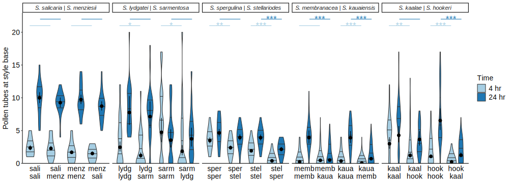
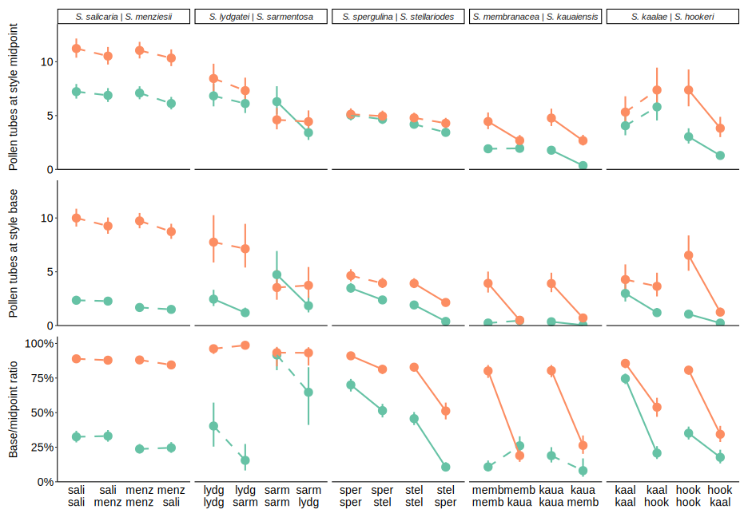
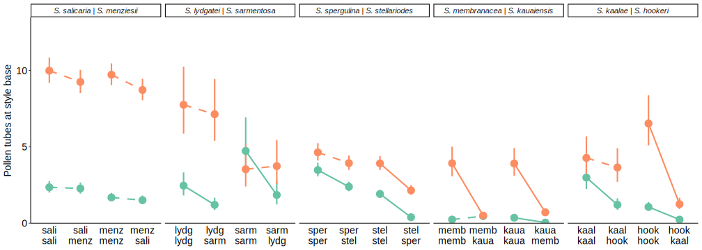
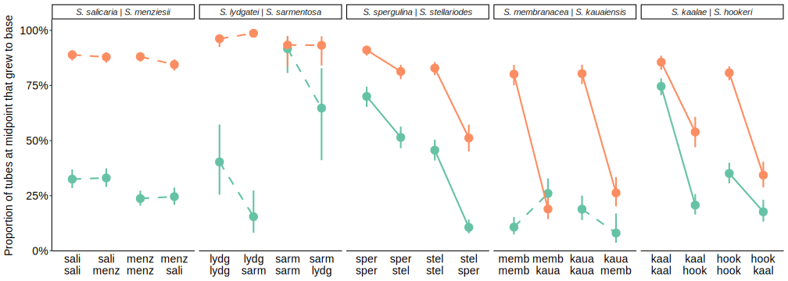
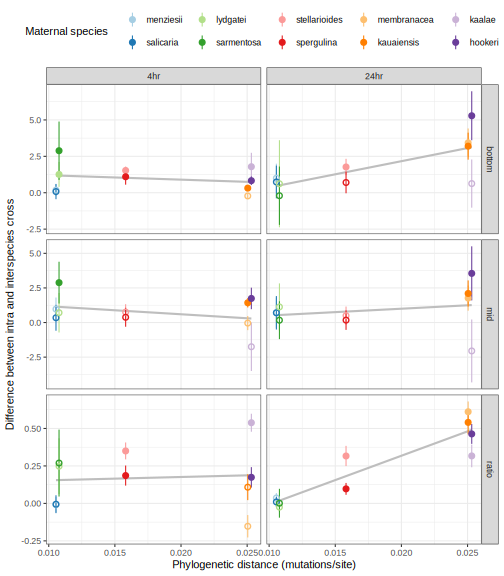
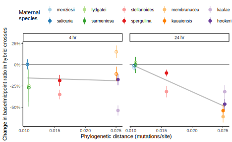

Test for post-pollination, pre-zygotic reproductive barriers between five species pairs of Schiedea that have hybridization potential, by measuring pollen tube growth from parental and hybrid crosses at two time points.
Response variables:
Fixed effects:
Random effects:
library(knitr)
knitr::opts_chunk$set(comment="", cache=T, warning = F, message = F, width=999,
fig.path = "figures/", dev = "svglite", dev.args=list(fix_text_size=FALSE))
options(knitr.kable.NA = '')
library(tidyverse)
library(gridExtra)
library(broom)
library(emmeans) #Estimated marginal means aka least square means.
library(glmmTMB) #generalized linear mixed models with Template Model Builder## Warning in checkMatrixPackageVersion(getOption("TMB.check.Matrix", TRUE)): Package version inconsistency detected.
## TMB was built with Matrix ABI version 1
## Current Matrix ABI version is 2
## Please re-install 'TMB' from source using install.packages('TMB', type = 'source') or ask CRAN for a binary version of 'TMB' matching CRAN's 'Matrix' package## Warning in check_dep_version(): ABI version mismatch:
## lme4 was built with Matrix ABI version 1
## Current Matrix ABI version is 2
## Please re-install lme4 from source or restore original 'Matrix' package#overwrite function to make emmeans and multcomp play nice
modelparm.glmmTMB <- function (model, coef. = function(x) fixef(x)[[component]],
vcov. = function(x) vcov(x)[[component]],
df = NULL, component="cond", ...) {
multcomp:::modelparm.default(model, coef. = coef., vcov. = vcov.,
df = df, ...)
}
signif.num <- function(x) {
cut(x, breaks = c(0, 0.001, 0.01, 0.05, 1),
labels = c("***", "**", "*", " "), include.lowest = T)
}#long format: salmen (1 stigma/vial), lydsar (2 stigmas/vial), kaahoo (3 stigmas/vial without letter)
#wide format: memkau (3-5 stigmas/vial), speste (6 stigmas/vial), kaahoo_extra(3-5 stigmas/vial)
pops <- list(sali="842", menz = c("849", "950"),
lydg="6682", sarm="896",
sper= c("120289","120294","120296"), stel = c("14651","14765"),
memb = c("mem","864"), kaua = "kaua",
kaal = c("892", "3587"), hook = c("794", "866", "879","899"))
pair_labels <- c(salmen = "S. salicaria | S. menziesii",
lydsar = "S. lydgatei | S. sarmentosa",
speste = "S. spergulina | S. stellariodes",
memkau = "S. membranacea | S. kauaiensis",
kaahoo = "S. kaalae | S. hookeri")
abbrev <- list(salmen = c(S="Sl",M="Mn"),
lydsar = c(L="Ly",S="Sr"),
speste = c(Sp="Sp",St="St"),
memkau = c(M="Mb",K="Ki"),
kaahoo = c(K="Kl",H="Ho"))
species_names <- c("Mn"="menziesii", "Sl"="salicaria",
"Ly"="lydgatei", "Sr" ="sarmentosa",
"St"="stellarioides","Sp"="spergulina",
"Mb"="membranacea","Ki"="kauaiensis",
"Kl"="kaalae", "Ho"="hookeri")
cross_levels <- map(abbrev, ~ c(paste0(.x[1],"x",.x[1]), paste0(.x[1],"x",.x[2]), paste0(.x[2],"x",.x[2]), paste0(.x[2],"x",.x[1])))
tubesl <- list()
# kaalae - hookeri
tubesl[["kaahoo"]] <- read_csv("data/pollentubes_kaahoo_extra.csv") %>%
pivot_longer(starts_with(c("mid","bottom")), names_to=c("location","stigma"), names_sep="_", values_to="n_tubes") %>%
pivot_wider(names_from="location", values_from="n_tubes") %>%
drop_na(mid, bottom) %>% #one entry has mid but no bottom count
mutate(momcross = toupper(str_sub(momsp,1,1)), dadcross = toupper(str_sub(dadsp,1,1)),
observer="SGW") %>%
bind_rows(read_csv("data/pollentubes_kaahoo.csv") %>% #edited from pollentubes.csv
separate(cross, into=c("momcross","dadcross"), sep="x") %>%
mutate(observer="SZ",
vial = as.numeric(str_remove(vial, "[ABCD]")))) %>%
mutate(momid = paste(momcross, momid), dadid = paste(dadcross, dadid))
# lydgatei- - sarmentosa
tubesl[["lydsar"]] <- read_csv("data/pollentubes_lydsar.csv") %>%
filter(keep == 1, hr != 2) %>% select(-keep) %>% #exclude the resamples of pollinations that gave no tubes, and counts at 2 hrs
mutate(mompop = as.character(mompop), dadpop=as.character(dadpop),
momid = paste(mompop, momplant), dadid = paste(dadpop, dadplant),
momcross = ifelse(mompop %in% pops[["sarm"]], "S", "L"), dadcross = ifelse(dadpop %in% pops[["sarm"]], "S", "L"))
#salicaria - menziesii
tubesl[["salmen"]] <- read_csv("data/pollentubes_salmen.csv") %>%
select(-cross) %>%
mutate(mompop = str_sub(momid, 1, 3), dadpop = str_sub(dadid, 1, 3),
momcross = ifelse(mompop %in% pops[["sali"]], "S", "M"), dadcross = ifelse(dadpop %in% pops[["sali"]], "S", "M"))
# membranacea - kauaiensis
tubesl[["memkau"]] <- read_csv("data/pollentubes_memkau.csv") %>% mutate(across(ends_with("sp"), as.factor)) %>%
pivot_longer(starts_with(c("mid","bottom")), names_to=c("location","stigma"), names_sep="_", values_to="n_tubes") %>%
pivot_wider(names_from="location", values_from="n_tubes") %>%
mutate(status = fct_explicit_na(status, "OK"),
mid = ifelse(status=="no pollen on stigmas", NA, mid), #set to NA to drop, 0 to keep
bottom = ifelse(status=="no pollen on stigmas", NA, bottom)) %>% #see SGW email 2022-05-09, NOTES tab
drop_na(mid) %>%
mutate(momcross = ifelse(momsp %in% pops[["memb"]], "M", "K"), dadcross = ifelse(dadsp %in% pops[["memb"]], "M", "K"),
momid = paste(momcross, momplant), dadid = paste(dadcross, dadplant),)
#spergulina - stellarioides
tubesl[["speste"]] <- read_csv("data/pollentubes_speste.csv") %>% mutate(across(ends_with("pop"), as.factor)) %>%
pivot_longer(starts_with(c("mid","bottom")), names_to=c("location","stigma"), names_sep="_", values_to="n_tubes") %>%
pivot_wider(names_from="location", values_from="n_tubes") %>% drop_na(mid) %>%
mutate(momid = paste(mompop, momplant), dadid = paste(dadpop, dadplant),
momcross = ifelse(mompop %in% pops[["sper"]], "Sp", "St"), dadcross = ifelse(dadpop %in% pops[["sper"]], "Sp", "St"))
tubes <- bind_rows(tubesl, .id = "pair") %>%
mutate(hr = factor(paste0(hr,"hr"), levels=c("4hr","24hr")),
ratioraw = bottom/mid,
adjmid = ifelse(bottom > mid, bottom, mid),
ratio = bottom/adjmid,
justmid = mid - bottom,
vial = as.character(vial), #for random effect of pollination
momcross = map2_chr(pair, momcross, ~ abbrev[[.x]][[.y]]),
dadcross = map2_chr(pair, dadcross, ~ abbrev[[.x]][[.y]]),
cross = factor(paste0(momcross,"x",dadcross), levels=unlist(cross_levels)),
crosshr = factor(paste0(cross, hr), levels = paste(rep(levels(cross),each=2), levels(hr), sep="")),
pair = factor(pair, levels=names(pair_labels))) %>% arrange(pair)
str(tubes)tibble [1,943 × 31] (S3: tbl_df/tbl/data.frame)
$ pair : Factor w/ 5 levels "salmen","lydsar",..: 1 1 1 1 1 1 1 1 1 1 ...
$ line : num [1:1943] 114 422 423 454 455 330 331 452 453 206 ...
$ emasculation_date: Date[1:1943], format: NA NA ...
$ pollination_date : Date[1:1943], format: "2020-01-08" "2020-01-17" ...
$ momsp : chr [1:1943] NA NA NA NA ...
$ momid : chr [1:1943] "842 201-46" "842 201-46" "842 201-46" "842 201-46" ...
$ dadsp : chr [1:1943] NA NA NA NA ...
$ dadid : chr [1:1943] "842 221F" "842 221F" "842 221F" "842 51-20" ...
$ vial : chr [1:1943] "83" "408" "409" "442" ...
$ hr : Factor w/ 2 levels "4hr","24hr": 1 1 2 1 2 1 2 1 2 1 ...
$ count_date : Date[1:1943], format: NA NA ...
$ notes : chr [1:1943] NA NA NA NA ...
$ stigma : chr [1:1943] NA NA NA NA ...
$ mid : num [1:1943] 9 4 9 8 13 6 9 9 12 4 ...
$ bottom : num [1:1943] 3 1 7 3 11 1 9 3 11 1 ...
$ momcross : chr [1:1943] "Sl" "Sl" "Sl" "Sl" ...
$ dadcross : chr [1:1943] "Sl" "Sl" "Sl" "Sl" ...
$ observer : chr [1:1943] NA NA NA NA ...
$ grains : num [1:1943] NA NA NA NA NA NA NA NA NA NA ...
$ mompop : chr [1:1943] "842" "842" "842" "842" ...
$ momplant : chr [1:1943] NA NA NA NA ...
$ dadpop : chr [1:1943] "842" "842" "842" "842" ...
$ dadplant : chr [1:1943] NA NA NA NA ...
$ collect_date : Date[1:1943], format: "2020-01-08" NA ...
$ status : Factor w/ 3 levels "no pollen on stigmas",..: NA NA NA NA NA NA NA NA NA NA ...
$ ratioraw : num [1:1943] 0.333 0.25 0.778 0.375 0.846 ...
$ adjmid : num [1:1943] 9 4 9 8 13 6 9 9 12 4 ...
$ ratio : num [1:1943] 0.333 0.25 0.778 0.375 0.846 ...
$ justmid : num [1:1943] 6 3 2 5 2 5 0 6 1 3 ...
$ cross : Factor w/ 20 levels "SlxSl","SlxMn",..: 1 1 1 1 1 2 2 2 2 1 ...
$ crosshr : Factor w/ 40 levels "SlxSl4hr","SlxSl24hr",..: 1 1 2 1 2 3 4 3 4 1 ...kable(with(tubes, table(cross, hr)), caption="Number of styles of each cross type")| 4hr | 24hr | |
|---|---|---|
| SlxSl | 17 | 16 |
| SlxMn | 18 | 18 |
| MnxMn | 22 | 22 |
| MnxSl | 20 | 20 |
| LyxLy | 28 | 28 |
| LyxSr | 28 | 28 |
| SrxSr | 16 | 16 |
| SrxLy | 18 | 18 |
| SpxSp | 52 | 53 |
| SpxSt | 66 | 64 |
| StxSt | 78 | 77 |
| StxSp | 42 | 42 |
| MbxMb | 75 | 80 |
| MbxKi | 87 | 95 |
| KixKi | 73 | 76 |
| KixMb | 67 | 68 |
| KlxKl | 72 | 55 |
| KlxHo | 53 | 38 |
| HoxHo | 97 | 79 |
| HoxKl | 66 | 55 |
kable(with(tubes, table(pair, hr)), caption="Number of styles of each species pair")| 4hr | 24hr | |
|---|---|---|
| salmen | 77 | 76 |
| lydsar | 90 | 90 |
| speste | 238 | 236 |
| memkau | 302 | 319 |
| kaahoo | 288 | 227 |
nrow(tubes)[1] 1943kable(tubes %>% count(pair, cross, momid, dadid, hr, vial) %>% with(table(pair, n)), caption = "Number of styles counted per vial")| 1 | 2 | 3 | 4 | 5 | 6 | |
|---|---|---|---|---|---|---|
| salmen | 153 | 0 | 0 | 0 | 0 | 0 |
| lydsar | 0 | 90 | 0 | 0 | 0 | 0 |
| speste | 0 | 0 | 0 | 0 | 6 | 74 |
| memkau | 5 | 11 | 91 | 44 | 29 | 0 |
| kaahoo | 5 | 21 | 126 | 20 | 2 | 0 |
kable(tubes %>% count(pair, cross, hr, momid, vial) %>% with(table(pair, hr)), caption = "Number of vials for each cross type")| 4hr | 24hr | |
|---|---|---|
| salmen | 77 | 76 |
| lydsar | 45 | 45 |
| speste | 40 | 40 |
| memkau | 90 | 90 |
| kaahoo | 98 | 76 |
tubes %>% count(pair, cross, hr, momid, vial) %>% nrow()[1] 677kable(tubes %>% count(pair, cross, momid) %>% count(pair, cross), caption="Number of maternal plants of each cross type")| pair | cross | n |
|---|---|---|
| salmen | SlxSl | 8 |
| salmen | SlxMn | 9 |
| salmen | MnxMn | 8 |
| salmen | MnxSl | 8 |
| lydsar | LyxLy | 7 |
| lydsar | LyxSr | 7 |
| lydsar | SrxSr | 4 |
| lydsar | SrxLy | 4 |
| speste | SpxSp | 5 |
| speste | SpxSt | 5 |
| speste | StxSt | 5 |
| speste | StxSp | 5 |
| memkau | MbxMb | 6 |
| memkau | MbxKi | 6 |
| memkau | KixKi | 6 |
| memkau | KixMb | 6 |
| kaahoo | KlxKl | 4 |
| kaahoo | KlxHo | 5 |
| kaahoo | HoxHo | 6 |
| kaahoo | HoxKl | 6 |
kable(tubes %>% count(pair, cross, momid, dadid) %>% count(pair, cross, momid) %>% with(table(pair, n)), caption="Number of paternal plants per maternal plant")| 1 | 2 | 3 | 4 | |
|---|---|---|---|---|
| salmen | 1 | 28 | 4 | 0 |
| lydsar | 0 | 21 | 1 | 0 |
| speste | 4 | 12 | 4 | 0 |
| memkau | 6 | 18 | 0 | 0 |
| kaahoo | 9 | 9 | 2 | 1 |
pair_contrasts <- function(mod) {
lv <- levels(mod$frame$crosshr)
crosshr.x <- set_names(rep(1:4, each=2) + rep(c(-0.25, 0.25), 4), lv)
tube.contrasts <- list(c(5,6), c(7,8), c(5,7), c(6,8),
c(3,4), c(1,2), c(3,1), c(4,2),
c(5,1), c(6,2)) %>%
map_chr(~paste(lv[.x[1]], "-", lv[.x[2]], "== 0"))
tube.contrasts <- tube.contrasts[c(3,4,7,8)] #TODO exclude time and between-species comparisons for plotting
multcomp::glht(mod, linfct = multcomp::mcp(crosshr=tube.contrasts)) %>%
multcomp:::summary.glht(test=multcomp::adjusted(type="fdr")) %>% tidy() %>%
separate(contrast, c("lvl1", "lvl2"), sep = " - ", extra="merge") %>%
mutate(signif = adj.p.value < 0.05,
stars = signif.num(adj.p.value),
height = c(rep(c(1,1,2,3),2),4,5)[c(3,4,7,8)],
x1 = crosshr.x[lvl1],
x2 = crosshr.x[lvl2])
}
pair_emm <- function(mod) {
emm <- ref_grid(mod) %>% emmeans(~ crosshr) %>% summary() %>%
mutate(cross = factor(str_sub(crosshr,1,5), levels=unlist(cross_levels)),
hr = factor(str_sub(crosshr,6,10), levels=c("4hr","24hr")), .keep="unused")
if(mod$modelInfo$family$link == "logit") {
emm %>% mutate(response = plogis(emmean), uSE = plogis(emmean+SE), lSE = plogis(emmean-SE))
} else if(mod$modelInfo$family$link == "log") {
emm %>% mutate(response = exp(emmean), uSE = exp(emmean+SE), lSE = exp(emmean-SE))
}
}
tubes.mod <- tubes %>% group_by(pair) %>% nest() %>% #TODO got rid of 1|dadid due to extremely small estimates in some species, OK?
mutate(mid_mod = map(data, ~ glmmTMB(mid~crosshr + (1|momid) + (1|vial), data=.x, family="poisson")),
mid_emm = map(mid_mod, pair_emm),
mid_cont = map(mid_mod, pair_contrasts),
bottom_mod= map(data, ~ glmmTMB(bottom~crosshr + (1|momid) + (1|vial), data=.x, family="poisson")),
bottom_emm = map(bottom_mod, pair_emm),
bottom_cont= map(bottom_mod, pair_contrasts),
ratio_mod = map(data, ~ glmmTMB(cbind(bottom, adjmid-bottom)~crosshr + (1|momid) + (1|vial), data=.x, family="binomial")),
ratio_emm = map(ratio_mod, pair_emm),
ratio_cont = map(ratio_mod, pair_contrasts))
#diagnose random effects
# library(broom.mixed)
# tubes.mod %>% mutate(ranef_midmod2 = map(bottom_mod, tidy)) %>% select(ranef_midmod2) %>% unnest(ranef_midmod2) %>%
# filter(effect == "ran_pars") %>%
# ggplot(aes(x=pair, color=group, y=log10(estimate))) + geom_point()mytheme <- theme(legend.text=element_text(size=rel(1)), legend.position="right",
axis.text = element_text(colour="black", size=rel(1)), text=element_text(size=14),
axis.ticks.x = element_blank(), axis.title.x=element_blank(),
plot.title = element_text(face="italic", size=14), strip.text = element_text(face="italic"))
timefills <- scale_fill_brewer("Time", palette="Paired", labels=c("4 hr","24 hr"))
timecolors <- scale_color_brewer("Time", palette="Paired", labels=c("4 hr","24 hr"))
var_labels <- c(mid = "Pollen tubes at middle of style",
bottom = "Pollen tubes at base of style",
ratio = "Proportion of pollen tubes at middle that grew to base")
plot_all <- function(yvar) {
signif.cont <- unnest(select(tubes.mod, paste0(yvar,"_cont")), paste0(yvar,"_cont")) %>%
mutate(n=row_number(), stars=replace_na(as.character(stars), "NA"),
hr = fct_recode(factor(height), "4hr"="2", "24hr"="3"),
ypos=(height-1)/c(mid=1, bottom=1, ratio=20)[yvar]+c(mid=20, bottom=20, ratio=1)[yvar])
ggplot(unnest(select(tubes.mod, paste0(yvar,"_emm")), paste0(yvar,"_emm"))) +
facet_wrap(vars(pair), scales="free_x", nrow=1, labeller = as_labeller(pair_labels)) +
geom_violin(data=unnest(select(tubes.mod, data), data), aes(y=.data[[yvar]], x=cross, fill=hr),position=position_dodge(),
draw_quantiles=c(0.25,0.5,0.75), linewidth=0.5, bw=ifelse(yvar=="ratio",0.1,1)) +
geom_pointrange(aes(y=response, x=cross, ymin=lSE, ymax=uSE), position=position_dodge2(0.9)) +
geom_segment(data=signif.cont, aes(x=x1, xend=x2, y=ypos, yend=ypos, color=hr))+
geom_text(data=signif.cont, aes(x=(x1+x2)/2, y=ypos*0.98, label=stars, color=hr), hjust=0.5, vjust=0, size=6)+
# geom_signif(data=, aes(y_position=ypos, xmin = x1, xmax = x2, annotations=stars, group=n),
# vjust=0.5, tip_length=0.01, manual=T) +
labs(y=var_labels[yvar]) +
scale_y_continuous(limits=c(0,c(mid=22.5, bottom=22.5, ratio=1.1)[yvar]),
expand = expansion(add=c(0,c(mid=0.5, bottom=0.5, ratio=0.05)[yvar])),
breaks = seq(0,1,by=0.25) * c(mid = 20, bottom = 20, ratio = 1)[yvar],
labels = ifelse(yvar=="ratio", scales::percent_format(), scales::number_format()))+
scale_x_discrete(labels=~str_replace_all(str_replace(.x, "x","\n"),
set_names(str_sub(species_names,1,4), names(species_names)))) +
theme_classic() + mytheme + timefills + timecolors + guides(color="none")
}
plot_all("mid")plot_all("bottom")
plot_all("ratio")plot_all_simple <- function(yvar) {
signif.cont <- unnest(select(tubes.mod, paste0(yvar,"_cont")), paste0(yvar,"_cont")) %>%
mutate(n=row_number(), stars=replace_na(as.character(stars), "NA"),
hr = fct_recode(factor(height), "4hr"="2", "24hr"="3"),
ypos=(height-1)/c(mid=1, bottom=1, ratio=20)[yvar]+c(mid=20, bottom=20, ratio=1)[yvar])
tubes.mod.plot <- unnest(select(tubes.mod, paste0(yvar,"_emm")), paste0(yvar,"_emm")) %>%
mutate(cross_pos = as.integer(cross)-4*as.integer(pair)+4,
contrast = paste(pair, as.integer(cross_pos>2), ifelse(hr=="4hr","04hr","24hr")))
tubes.mod.plot.signif <- tubes.mod.plot %>% select(pair, hr, response, contrast, cross_pos) %>%
arrange(contrast) %>% mutate(startend = rep(c(1,2), 4)) %>%
pivot_wider(names_from=startend, values_from=c(response, cross_pos)) %>%
arrange(pair, desc(cross_pos_1), hr) %>% #careful, needs to match order of signif.cont
bind_cols(select(ungroup(signif.cont), -pair, -hr, -x1, -x2))
ggplot(tubes.mod.plot) +
facet_wrap(vars(pair), scales="free_x", nrow=1, labeller = as_labeller(pair_labels)) +
geom_pointrange(aes(y=response, x=cross, ymin=lSE, ymax=uSE, color=hr),size=1, linewidth=1) +
#geom_path(aes(y=response, x=cross, group=contrast, color=hr))+
geom_segment(data=tubes.mod.plot.signif, aes(y=response_1, yend=response_2, x=cross_pos_1, xend=cross_pos_2,
color=hr, linetype=signif), linewidth=1)+
labs(y=var_labels[yvar]) +
scale_y_continuous(limits=c(0,c(mid=13, bottom=13, ratio=1)[yvar]),
expand = expansion(add=c(0,c(mid=0.5, bottom=0.5, ratio=0.05)[yvar])),
breaks = seq(0,1,by=0.25) * c(mid = 20, bottom = 20, ratio = 1)[yvar],
labels = ifelse(yvar=="ratio", scales::percent_format(), scales::number_format()))+
scale_x_discrete(labels=~str_replace_all(str_replace(.x, "x","\n"),
set_names(str_sub(species_names,1,4), names(species_names)))) +
theme_classic() + mytheme +
scale_color_brewer(palette="Set2") + scale_linetype_manual(values=c(2,1))+ guides(linetype="none", color="none")
}
plot_all_simple("mid")
plot_all_simple("bottom")
plot_all_simple("ratio")
plot_emm <- function(pair, emm, cont, data, yvar) {
ggplot(emm, aes(y=response, x=cross, fill=hr)) +
geom_violin(data=data, aes_string(y=yvar),position=position_dodge(),
draw_quantiles=c(0.25,0.5,0.75), linewidth=0.5, bw=ifelse(yvar=="ratio",0.1,1)) +
geom_pointrange(aes(ymin=lSE, ymax=uSE), position=position_dodge2(0.9)) +
geom_signif(data=emm, y_position=cont$height/c(mid=1, bottom=1, ratio=15)[yvar]+c(mid=19, bottom=19, ratio=1)[yvar],
xmin = cont$x1, xmax = cont$x2, annotations=replace_na(as.character(cont$stars), "NA"), vjust=0.5, tip_length=0.01) +
labs(x="", y=var_labels[yvar], title=pair_labels[pair]) +
scale_y_continuous(limits=c(0,c(mid=24, bottom=24, ratio=1.4)[yvar]),
expand = expansion(add=c(0,c(mid=0.5, bottom=0.5, ratio=0.05)[yvar])),
breaks = seq(0,1,by=0.25) * c(mid = 20, bottom = 20, ratio = 1)[yvar])+
scale_x_discrete(labels=~str_replace(.x, "x"," x ")) +
theme_classic() + mytheme + timefills + guides(fill="none")
}
grid.arrange(grobs=pmap(select(tubes.mod, pair, emm=mid_emm, cont=mid_cont, data),
plot_emm, yvar="mid"), nrow=1)
grid.arrange(grobs=pmap(select(tubes.mod, pair, emm=bottom_emm, cont=bottom_cont, data),
plot_emm, yvar="bottom"), nrow=1)
grid.arrange(grobs=pmap(select(tubes.mod, pair, emm=ratio_emm, cont=ratio_cont, data),
plot_emm, yvar="ratio"), nrow=1)tubes.mod.long <- tubes.mod %>% select(ends_with(c("emm","cont"))) %>% pivot_longer(ends_with(c("emm","cont"))) %>%
separate(name, into=c("var","table")) %>% pivot_wider(names_from=table)
emm.response <- tubes.mod.long %>% select(var, emm) %>% unnest(emm) %>% mutate(crosshr = paste0(cross, hr)) %>% select(var, crosshr, response)
tubes.mod.long %>% select(var, cont) %>% unnest(cont) %>% select(var, lvl1, lvl2, adj.p.value) %>%
left_join(rename(emm.response, lvl1=crosshr, response1=response)) %>%
left_join(rename(emm.response, lvl2=crosshr, response2=response)) %>%
mutate(hyb.vs.intra = if_else(str_sub(lvl1, 1,2) != str_sub(lvl1, 4,5), response1/response2, response2/response1),
decline = 1-hyb.vs.intra) %>%
kable(caption = "Decline in pollen tubes from intraspecific to interspecific crosses", digits=3)| pair | var | lvl1 | lvl2 | adj.p.value | response1 | response2 | hyb.vs.intra | decline |
|---|---|---|---|---|---|---|---|---|
| salmen | mid | MnxMn4hr | MnxSl4hr | 0.702 | 7.095 | 6.125 | 0.863 | 0.137 |
| salmen | mid | MnxMn24hr | MnxSl24hr | 0.702 | 11.052 | 10.342 | 0.936 | 0.064 |
| salmen | mid | SlxMn4hr | SlxSl4hr | 0.702 | 6.880 | 7.224 | 0.952 | 0.048 |
| salmen | mid | SlxMn24hr | SlxSl24hr | 0.702 | 10.529 | 11.233 | 0.937 | 0.063 |
| salmen | bottom | MnxMn4hr | MnxSl4hr | 0.869 | 1.682 | 1.505 | 0.895 | 0.105 |
| salmen | bottom | MnxMn24hr | MnxSl24hr | 0.869 | 9.729 | 8.731 | 0.897 | 0.103 |
| salmen | bottom | SlxMn4hr | SlxSl4hr | 0.878 | 2.274 | 2.352 | 0.967 | 0.033 |
| salmen | bottom | SlxMn24hr | SlxSl24hr | 0.869 | 9.256 | 9.995 | 0.926 | 0.074 |
| salmen | ratio | MnxMn4hr | MnxSl4hr | 0.927 | 0.237 | 0.246 | 1.037 | -0.037 |
| salmen | ratio | MnxMn24hr | MnxSl24hr | 0.927 | 0.881 | 0.845 | 0.959 | 0.041 |
| salmen | ratio | SlxMn4hr | SlxSl4hr | 0.927 | 0.331 | 0.325 | 1.017 | -0.017 |
| salmen | ratio | SlxMn24hr | SlxSl24hr | 0.927 | 0.879 | 0.889 | 0.989 | 0.011 |
| lydsar | mid | SrxSr4hr | SrxLy4hr | 0.007 | 6.291 | 3.410 | 0.542 | 0.458 |
| lydsar | mid | SrxSr24hr | SrxLy24hr | 0.849 | 4.606 | 4.437 | 0.963 | 0.037 |
| lydsar | mid | LyxSr4hr | LyxLy4hr | 0.562 | 6.120 | 6.829 | 0.896 | 0.104 |
| lydsar | mid | LyxSr24hr | LyxLy24hr | 0.536 | 7.318 | 8.446 | 0.866 | 0.134 |
| lydsar | bottom | SrxSr4hr | SrxLy4hr | 0.046 | 4.734 | 1.848 | 0.390 | 0.610 |
| lydsar | bottom | SrxSr24hr | SrxLy24hr | 0.874 | 3.535 | 3.740 | 1.058 | -0.058 |
| lydsar | bottom | LyxSr4hr | LyxLy4hr | 0.046 | 1.200 | 2.458 | 0.488 | 0.512 |
| lydsar | bottom | LyxSr24hr | LyxLy24hr | 0.874 | 7.140 | 7.756 | 0.921 | 0.079 |
| lydsar | ratio | SrxSr4hr | SrxLy4hr | 0.157 | 0.917 | 0.647 | 0.706 | 0.294 |
| lydsar | ratio | SrxSr24hr | SrxLy24hr | 0.985 | 0.933 | 0.932 | 0.999 | 0.001 |
| lydsar | ratio | LyxSr4hr | LyxLy4hr | 0.157 | 0.155 | 0.403 | 0.384 | 0.616 |
| lydsar | ratio | LyxSr24hr | LyxLy24hr | 0.251 | 0.987 | 0.962 | 1.026 | -0.026 |
| speste | mid | StxSt4hr | StxSp4hr | 0.198 | 4.190 | 3.436 | 0.820 | 0.180 |
| speste | mid | StxSt24hr | StxSp24hr | 0.466 | 4.787 | 4.290 | 0.896 | 0.104 |
| speste | mid | SpxSt4hr | SpxSp4hr | 0.468 | 4.661 | 5.039 | 0.925 | 0.075 |
| speste | mid | SpxSt24hr | SpxSp24hr | 0.675 | 4.950 | 5.125 | 0.966 | 0.034 |
| speste | bottom | StxSt4hr | StxSp4hr | 0.000 | 1.915 | 0.388 | 0.203 | 0.797 |
| speste | bottom | StxSt24hr | StxSp24hr | 0.000 | 3.917 | 2.148 | 0.549 | 0.451 |
| speste | bottom | SpxSt4hr | SpxSp4hr | 0.002 | 2.384 | 3.481 | 0.685 | 0.315 |
| speste | bottom | SpxSt24hr | SpxSp24hr | 0.109 | 3.937 | 4.639 | 0.849 | 0.151 |
| speste | ratio | StxSt4hr | StxSp4hr | 0.000 | 0.457 | 0.106 | 0.233 | 0.767 |
| speste | ratio | StxSt24hr | StxSp24hr | 0.000 | 0.828 | 0.512 | 0.618 | 0.382 |
| speste | ratio | SpxSt4hr | SpxSp4hr | 0.004 | 0.515 | 0.700 | 0.735 | 0.265 |
| speste | ratio | SpxSt24hr | SpxSp24hr | 0.009 | 0.813 | 0.910 | 0.893 | 0.107 |
| memkau | mid | KixKi4hr | KixMb4hr | 0.000 | 1.781 | 0.354 | 0.199 | 0.801 |
| memkau | mid | KixKi24hr | KixMb24hr | 0.001 | 4.767 | 2.669 | 0.560 | 0.440 |
| memkau | mid | MbxKi4hr | MbxMb4hr | 0.910 | 1.954 | 1.914 | 1.021 | -0.021 |
| memkau | mid | MbxKi24hr | MbxMb24hr | 0.003 | 2.681 | 4.446 | 0.603 | 0.397 |
| memkau | bottom | KixKi4hr | KixMb4hr | 0.000 | 0.356 | 0.040 | 0.112 | 0.888 |
| memkau | bottom | KixKi24hr | KixMb24hr | 0.000 | 3.908 | 0.710 | 0.182 | 0.818 |
| memkau | bottom | MbxKi4hr | MbxMb4hr | 0.093 | 0.460 | 0.238 | 1.932 | -0.932 |
| memkau | bottom | MbxKi24hr | MbxMb24hr | 0.000 | 0.499 | 3.927 | 0.127 | 0.873 |
| memkau | ratio | KixKi4hr | KixMb4hr | 0.282 | 0.189 | 0.081 | 0.427 | 0.573 |
| memkau | ratio | KixKi24hr | KixMb24hr | 0.000 | 0.804 | 0.263 | 0.327 | 0.673 |
| memkau | ratio | MbxKi4hr | MbxMb4hr | 0.057 | 0.260 | 0.108 | 2.418 | -1.418 |
| memkau | ratio | MbxKi24hr | MbxMb24hr | 0.000 | 0.190 | 0.801 | 0.237 | 0.763 |
| kaahoo | mid | HoxHo4hr | HoxKl4hr | 0.000 | 3.005 | 1.289 | 0.429 | 0.571 |
| kaahoo | mid | HoxHo24hr | HoxKl24hr | 0.000 | 7.395 | 3.826 | 0.517 | 0.483 |
| kaahoo | mid | KlxHo4hr | KlxKl4hr | 0.100 | 5.795 | 4.052 | 1.430 | -0.430 |
| kaahoo | mid | KlxHo24hr | KlxKl24hr | 0.100 | 7.375 | 5.319 | 1.387 | -0.387 |
| kaahoo | bottom | HoxHo4hr | HoxKl4hr | 0.000 | 1.054 | 0.234 | 0.222 | 0.778 |
| kaahoo | bottom | HoxHo24hr | HoxKl24hr | 0.000 | 6.545 | 1.245 | 0.190 | 0.810 |
| kaahoo | bottom | KlxHo4hr | KlxKl4hr | 0.007 | 1.199 | 2.989 | 0.401 | 0.599 |
| kaahoo | bottom | KlxHo24hr | KlxKl24hr | 0.611 | 3.647 | 4.275 | 0.853 | 0.147 |
| kaahoo | ratio | HoxHo4hr | HoxKl4hr | 0.019 | 0.351 | 0.177 | 0.504 | 0.496 |
| kaahoo | ratio | HoxHo24hr | HoxKl24hr | 0.000 | 0.807 | 0.343 | 0.426 | 0.574 |
| kaahoo | ratio | KlxHo4hr | KlxKl4hr | 0.000 | 0.207 | 0.746 | 0.278 | 0.722 |
| kaahoo | ratio | KlxHo24hr | KlxKl24hr | 0.000 | 0.539 | 0.856 | 0.630 | 0.370 |
ggplot(tubes, aes(x=bottom, y=mid)) +
facet_wrap(vars(pair), labeller=as_labeller(pair_labels))+
labs(x=var_labels["bottom"], y=var_labels["mid"]) +
geom_abline(slope=1, size=1) +
geom_point(alpha=0.1) +
coord_fixed(xlim=c(0,NA),ylim=c(0,NA))+
theme_classic()+mytheme+theme(strip.text=element_text(face="italic"))library(ape)
tree <- read.nexus("data/RAxML_1ps_nocp_bipartitionsBranchLabels.sch.short.nobs.nex")
tubes.phylodist <- tubes.mod %>% select(pair, ends_with("_emm")) %>% pivot_longer(ends_with("_emm"), names_to="trait") %>%
mutate(trait = str_remove(trait, "_emm")) %>% unnest(value) %>%
mutate(momsp = factor(species_names[str_sub(cross, 1,2)], levels=species_names)) %>%
group_by(pair, trait, momsp, hr) %>%
summarize(trait_diff = response[1]-response[2],
trait_se = sqrt(((uSE[1]-lSE[1])/2)^2 + ((uSE[2]-lSE[2])/2)^2),#average upper + lower SE, then propagate error
dadsp = species_names[str_sub(cross[2], 4,5)], .groups = "drop") %>%
left_join(tubes.mod %>% select(pair, ends_with("_cont")) %>% pivot_longer(ends_with("_cont"), names_to="trait") %>%
mutate(trait = str_remove(trait, "_cont")) %>% unnest(value) %>%
mutate(momsp = factor(species_names[str_sub(lvl1, 1,2)], levels=species_names),
hr = factor(str_sub(lvl1,6,10), levels=c("4hr","24hr")))) %>%
mutate(pd = map2_dbl(as.character(momsp), as.character(dadsp), ~cophenetic(tree)[.x,.y]))
ggplot(tubes.phylodist, aes(x=pd, y=trait_diff)) + facet_grid(trait~hr, scales="free_y") +
geom_smooth(method="lm", se=F, color="grey") +
geom_pointrange(aes(color=momsp, ymin=trait_diff-trait_se, ymax=trait_diff+trait_se, shape=adj.p.value < 0.05)) +
scale_color_brewer(palette="Paired") + scale_shape_manual(values = c(1,19), guide ="none")+
labs(x="Phylogenetic distance (mutations/site)", color="Maternal species",
y="Difference between intra and interspecies cross") + theme_bw() +
theme(legend.position = "top")
tubes.phylodist %>% group_by(trait, hr) %>% nest() %>%
mutate(model = map(data, ~lm(trait_diff ~ pd, data=.x)),
coef = map(model, tidy)) %>% select(-data, -model) %>%
unnest(coef) %>% filter(term=="pd") %>% kable(digits=3)| trait | hr | term | estimate | std.error | statistic | p.value |
|---|---|---|---|---|---|---|
| bottom | 4hr | pd | -30.181 | 47.239 | -0.639 | 0.541 |
| bottom | 24hr | pd | 180.347 | 60.643 | 2.974 | 0.018 |
| mid | 4hr | pd | -58.105 | 58.332 | -0.996 | 0.348 |
| mid | 24hr | pd | 49.666 | 73.109 | 0.679 | 0.516 |
| ratio | 4hr | pd | 2.215 | 10.144 | 0.218 | 0.833 |
| ratio | 24hr | pd | 32.508 | 4.809 | 6.760 | 0.000 |
tubes.phylodist %>% filter(trait=="ratio") %>%
ggplot(aes(x=pd, y=-trait_diff)) + facet_wrap(vars(hr), labeller = as_labeller(c(`4hr`="4 hr", `24hr`="24 hr"))) +
geom_hline(yintercept=0)+
geom_smooth(method="lm", se=F, color="grey") +
geom_pointrange(aes(color=momsp, ymin=-(trait_diff-trait_se), ymax=-(trait_diff+trait_se), shape=adj.p.value < 0.05)) +
scale_color_brewer(palette="Paired")+ scale_shape_manual(values = c(1,19), guide ="none")+
scale_y_continuous(labels=scales::percent_format()) +
labs(x="Phylogenetic distance (mutations/site)", color="Maternal\nspecies",
y="Change in base/middle in hybrid crosses") +
theme_classic() + theme(legend.position = "top", panel.spacing = unit(1, "lines"))
tubes.phylodist %>% filter(trait=="ratio", hr=="24hr") %>% pull(trait_diff) %>% summary() Min. 1st Qu. Median Mean 3rd Qu. Max.
-0.02480 0.01646 0.20678 0.23690 0.42701 0.61171 citation("glmmTMB")To cite glmmTMB in publications use:
Mollie E. Brooks, Kasper Kristensen, Koen J. van Benthem, Arni
Magnusson, Casper W. Berg, Anders Nielsen, Hans J. Skaug, Martin
Maechler and Benjamin M. Bolker (2017). glmmTMB Balances Speed and
Flexibility Among Packages for Zero-inflated Generalized Linear Mixed
Modeling. The R Journal, 9(2), 378-400. doi: 10.32614/RJ-2017-066.
A BibTeX entry for LaTeX users is
@Article{,
author = {Mollie E. Brooks and Kasper Kristensen and Koen J. {van Benthem} and Arni Magnusson and Casper W. Berg and Anders Nielsen and Hans J. Skaug and Martin Maechler and Benjamin M. Bolker},
title = {{glmmTMB} Balances Speed and Flexibility Among Packages for Zero-inflated Generalized Linear Mixed Modeling},
year = {2017},
journal = {The R Journal},
doi = {10.32614/RJ-2017-066},
pages = {378--400},
volume = {9},
number = {2},
}citation("emmeans")To cite package 'emmeans' in publications use:
Lenth R (2023). _emmeans: Estimated Marginal Means, aka Least-Squares
Means_. R package version 1.8.5,
<https://CRAN.R-project.org/package=emmeans>.
A BibTeX entry for LaTeX users is
@Manual{,
title = {emmeans: Estimated Marginal Means, aka Least-Squares Means},
author = {Russell V. Lenth},
year = {2023},
note = {R package version 1.8.5},
url = {https://CRAN.R-project.org/package=emmeans},
}citation("multcomp")Please cite the multcomp package by the following reference:
Hothorn T, Bretz F, Westfall P (2008). "Simultaneous Inference in
General Parametric Models." _Biometrical Journal_, *50*(3), 346-363.
A BibTeX entry for LaTeX users is
@Article{,
title = {Simultaneous Inference in General Parametric Models},
author = {Torsten Hothorn and Frank Bretz and Peter Westfall},
journal = {Biometrical Journal},
year = {2008},
volume = {50},
number = {3},
pages = {346--363},
}